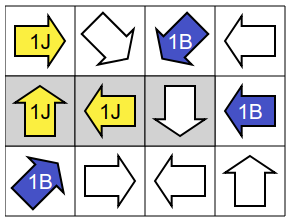
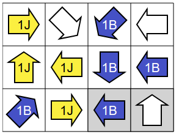
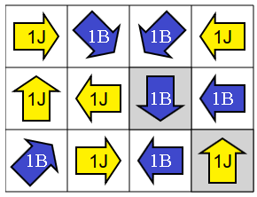
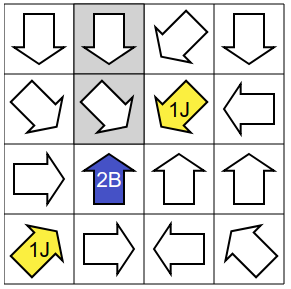
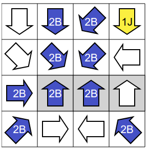
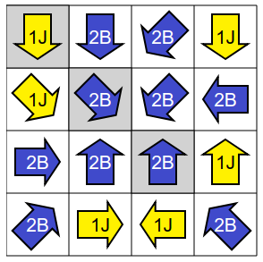

Avant de commencer, on peut remarquer que le problème est "symétrique" entre les couleurs jaune et bleue, dans le sens où si l'on a une solution au problème, alors en changeant toutes les flèches bleues par des flèches jaunes et toutes les flèches jaunes par des flèches bleues, on obtient une autre solution. De cette remarque, on peut déduire que l'on est libre de choisir comme on veut la couleur de la première flèche que l'on pose : ça ne peut pas être un mauvais choix qui nous empêcherait d'aboutir à une solution.
Dans la suite, on va toujours commencer par placer une flèche bleue.
On va essayer différents départs possibles, dans le but d'en trouver un qui nous "oblige" à poser des flèches de certaines couleurs. Ainsi, on pourra progresser dans le coloriage des flèches sans jamais se tromper.
Première tentative. Supposons d'abord que l'on commence par remplir la première rangée. Il y a deux manières différentes de la remplir tout en respectant les règles de coloriage :
 |
Une première manière. |
 |
Une seconde manière. |
Vu qu'il y a deux possibilités, on ne peut pas être sûr de laquelle prendre. Essayons autrement.
Deuxième tentative. Supposons maintenant que l'on commence par remplir la dernière rangée. Là encore, il y a deux manières différentes de la remplir tout en respectant les règles de coloriage :
 |
Une première manière. |
 |
Une seconde manière. |
Vu qu'il y a deux possibilités, on ne peut pas être sûr de laquelle prendre. Essayons une troisième approche.
Troisième tentative. Supposons maintenant que l'on commence par remplir la diagonale montante, qui est intéressante car elle comporte également deux flèches qui pointent l'une vers l'autre.
 |
Commençons, comme expliqué précédemment, par poser une flèche bleue. |
 |
Si on pose une deuxième flèche bleue, on est coincé, car la troisième case de la diagonale ne peut être ni jaune, ni bleue, car la flèche qu'elle contient pointe vers deux flèches bleues. |
 |
On en déduit que la seconde flèche doit être jaune (puisqu'elle ne peut pas être bleue), puis que la troisième doit être bleue (puisque la flèche bleue du coin doit pointer vers une autre flèche bleue). |
 |
La flèche jaune du milieu impose deux autres flèches jaunes. |
|  |
Dans la colonne de droite, la flèche du milieu ne peut pas être jaune, car elle pointe vers au moins deux flèches jaunes. On la colorie donc en bleu. |
 |
La dernière flèche bleue ajoutée impose deux nouvelles flèches bleues. |
|  |
Sur la rangée du bas, la seconde flèche ne peut pas être bleue, sinon la troisième flèche pointerait vers deux flèches bleues. Donc la seconde flèche est à colorier en jaune. |
 |
L'ajout de cette flèche jaune impose deux nouvelles flèches jaunes. |
 |
La dernière flèche doit être bleue, pour que la flèche située dans le coin en haut à droite pointe vers une seule flèche jaune.
C'est fini ! |
Il est judicieux de commencer par chercher à remplir une ligne avec le maximum de "contraintes", comme par exemple des flèches qui se pointent les unes vers les autres. Étudions par exemple la diagonale montante. La case en bas à gauche peut être jaune ou bleue.
Première tentative. Essayons de colorier la case en bas à gauche en jaune :
 |
Si la case suivante dans la direction de la flèche jaune était également jaune, on serait coincé pour la flèche suivante, car il nous faudrait une flèche 2J, or on n'en n'a pas. Donc la case suivante est bleue.
La flèche suivante sur la diagonale pointe vers une flèche jaune et une flèche bleue, il faut donc la colorier 1J (car 2B n'est pas valide, et on n'a pas de flèche 1B). |
 |
La flèche 2B nous impose deux flèches bleues. |
 |
La flèche 2B du milieu nous impose deux autres flèches bleues. |
 |
À ce stade, on est coincé, car la flèche 2B encadrée en rouge ne peut pas pointer vers deux flèches bleues. |
Deuxième tentative. Comme la flèche en bas à gauche ne peut pas être jaune, elle doit donc être bleue.
 |
Commençons donc avec un coin bleu. |
 |
Si la troisième flèche de la diagonale montante était jaune, alors on serait coincé, car il faudrait mettre une flèche jaune sur la case située entre les deux flèches colorées, et on ne pourrait plus alors placer deux flèches bleues sur la diagonale comme l'indique la flèche 2B du coin de départ. |
 |
On en déduit que la troisième flèche doit être bleue. |
 |
Cette seconde flèche bleue doit pointer vers deux flèches bleues, donc on colorie en bleue la flèche du milieu.
Ensuite, pour éviter que la flèche du coin en bas à gauche pointe vers trois flèches bleues, il faut colorier en jaune la flèche du coin en haut à droite. |
 |
La deuxième flèche 2B impose deux nouvelles flèches bleues. |
 |
Une de ces nouvelles flèches impose encore deux nouvelles flèches bleues. |
|  |
On en déduit encore deux flèches bleues supplémentaires. |
 |
Sur la troisième rangée, pour éviter d'avoir trois flèches bleues, il faut que la flèche tout à droite soit jaune.
Cette flèche 1J pointe déjà vers une autre flèche jaune, il faut donc mettre une flèche bleue dans le trou de la colonne de droite. |
 |
La flèche 2B ajoutée pointe déjà vers deux flèches bleues, il faut donc compléter la seconde rangée avec une flèche jaune. |
 |
L'ajout de cette flèche jaune impose deux nouvelles flèches jaunes. |
 |
La dernière flèche doit être jaune, pour que la flèche du coin en bas à droite pointe vers seulement deux flèches bleues.
C'est fini ! |
C'est de l'informatique !